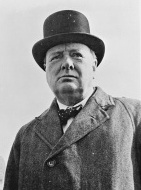

Winston Churchill (1874-1965), II. Dünya Savaşı sırasında ülkesini zafere taşıyan bir İngiliz politikacıdır. Savaş öncesi Churchill, geniş kitlelerce bir başarısızlık örneği olarak görüldü. Kariyeri, I. Dünya Savaşı boyunca İngilizler’in attığı yanlış adımlardan dolayı suçlandıktan sonra, uygulamada bitirilmişti. 1920’lerde Kabine’de hizmet etmişti, ama Adolf Hitler ve Nazi Partisi’nin Almanya’da gücü ele geçirdiği zamanla beraber Churchill, parlamentonun arka sıralarında koltuğunu bekliyordu. Hitler’in yükselişi hakkındaki uyarıları, Churchill’in yaygaracı bir kaçık olduğunu düşünen meslektaşları tarafından görmezden gelinmişti.

İngiltere, ülkenin en karanlık saatlerinin birinde Churchill’e sarıldı. II. Dünya Savaşı’nın başlarında Muhafazakâr Parti’nin lideri Neville Chamberlain, başbakandı. Ülkesini hayatta kalmak için umutsuz bir savaşta yönetme görevine uygun olmadığının açıkça anlaşıldığı 1940 yılında istifa etti. Churchill, İngiliz başbakanlığının geleneksel mekanı 10 Downing Street’te, onun yerine geçti.
II. Dünya Savaşı’nın ilk ayları, Müttefikler için bir yıkım olmuştu. 1939’da ve 1940 yılının başlarında Nazi Almanyası’nın ordusu, Polonya’yı, Danimarka’yı, Norveç’i, Belçika’yı, Hollanda’yı, Lüksemburg’u ve Fransa’yı işgal etti. Fransa’nın savunmasına yardım etmek üzere gönderilen İngiliz güçleri, Nazilerce kuşatıldı ve 1940’da kıtayı boşaltmaya zorlandılar. O noktada Amerika Birleşik Devletleri ve Sovyetler Birliği’nin o noktada tarafsız kalmasıyla İngiltere, Nazi Almanyası’nın hücumuna karşı gelmek için ayakta kalan tek büyük askerî güçtü.
Ancak başbakan olarak Churchill, imkansızı başardı. On sekiz ay boyunca İngiltere, Naziler’e tek başına direndi. Sovyetler Birliği savaşa, Hitler’in Rusya’yı işgal etmesinden sonra Haziran 1941’de girdi. Amerika Birleşik Devletleri aynı yıl ama daha sonra girdi. Sayısız dokunaklı konuşmasıyla Churchill, Britanyalılar’ı ve işgal edilmiş Avrupa’yı Naziler’le savaşmak için bir araya topladı. Müttefikler Almanlar’ı durdurdular ve 1944’te Normandiya Çıkartması’nın olduğu gün rüzgâr, Nazilerin ezici gücüne karşı dönmüştü.
EK BİLGİLER:
1. Siyasi hedeflerine ek olarak Churchill, başarılı bir gazeteci ve tarihçiydi. II. Dünya Savaşı’ndan sonra, ona 1953’te Nobel Edebiyat Ödülü kazandıran “İkinci Dünya Savaşı” adında kitlesel çatışmanın bir tarihini yazdı.
2. Churchill, başarılı bir savaş lideriydi, ama Muhafazakâr Parti’nin iç politikaları seçmenlerce pek tutulmuyordu. 1945’te Naziler’in yenilgisinden birkaç ay sonra seçmenler, onun yerine muhalif İşçi Partisi başkanı Clement Attlee’yi lider olarak seçtiler.
3. Savaş zamanı liderliğinin beğenilmesi dolayısıyla Churchill, 1963’te Amerika Birleşik Devletleri’nin ilk fahri yurttaşı yapıldı.